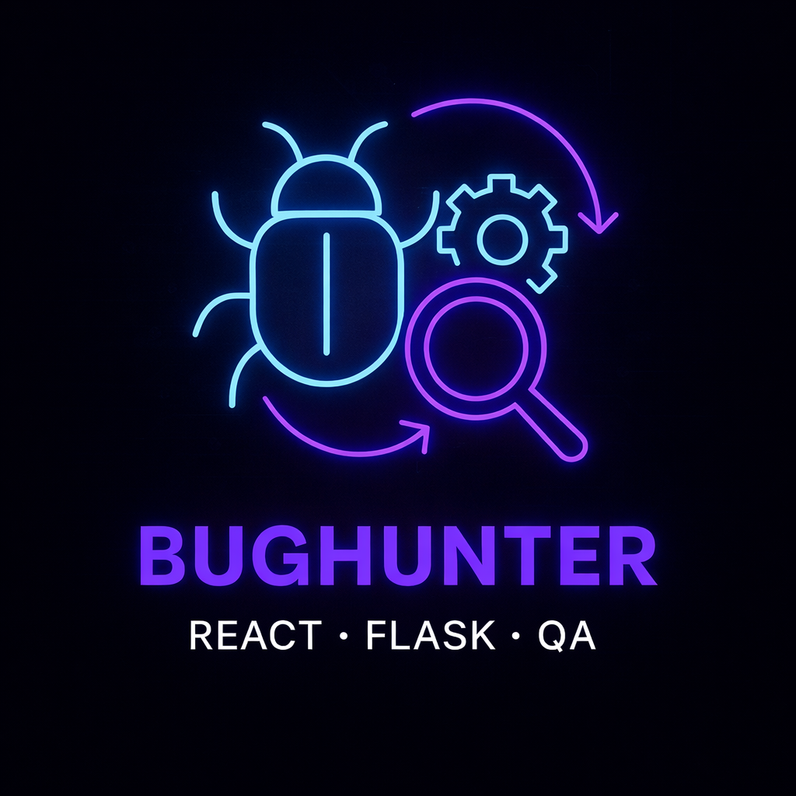
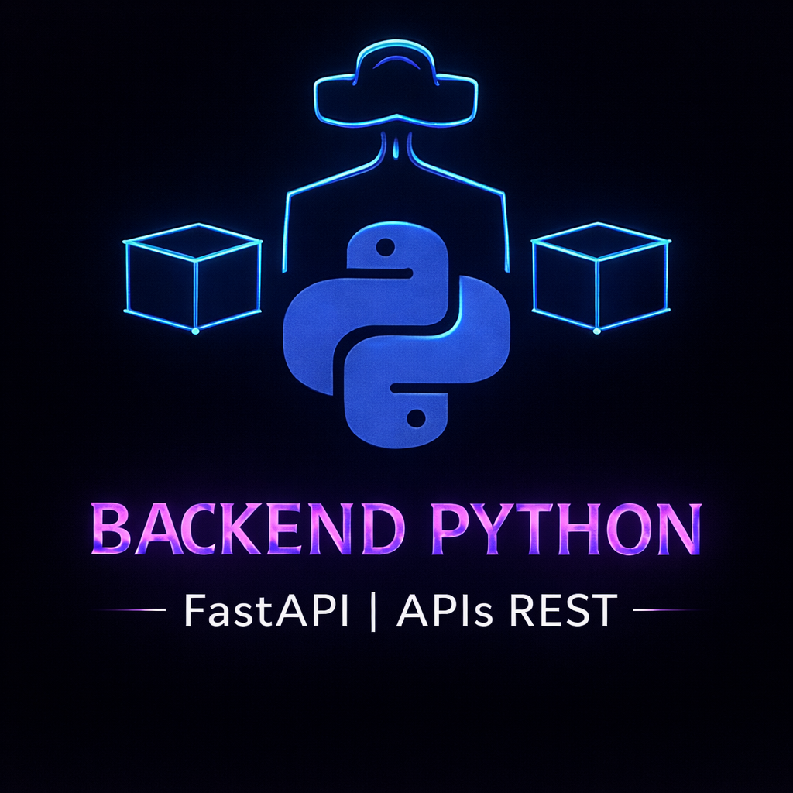

🧠 IA QA Lab | Python · QA aplicado à IA
Testes funcionais, performance e carga em modelos de linguagem.
Runner de QA com logs, rastreabilidade e análise de coerência textual.

🤖 Optimus-Robot | Python · IA · QA
Sistema distribuído com mensageria assíncrona, foco em testes, validação de fluxos e confiabilidade.

🧪 QA & Automação | Cypress · E2E
Automação de testes end-to-end em aplicação Kanban, cobrindo fluxos críticos e regressão.

🧪 QA & Automação de Testes | Selenium · PyTest · Postman
Testes de API, UI e automação com mindset QA, versionamento e boas práticas.

🐞 Bughunter | React · Flask · QA
Aplicação focada em rastreio de bugs, testes automatizados e workflows de qualidade.
